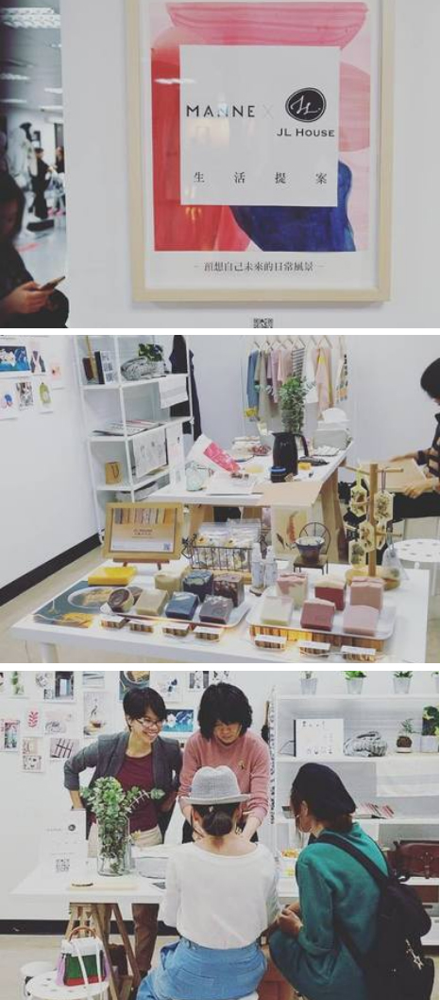

About me
謝謝您拜訪 JL House 手作皂・生活香氣 除了專精於冷製法手工皂，設計師JL在芳香療法、調製香氛部分皆有進修研究！ 希望提供品質穩定的自然香氛手工皂、香氣圓潤不帶有害化學物質的室內凝香蠟，讓您的生活空間也有SPA的氣氛。
用於【手工皂】我們只使用溫和型的精油！ 用於【凝香蠟片】室內的芳香產品，『不使用』有害人體的合成香味、溶劑、稀有植物的香味。 希望提供環保、健康、有藝術質感的生活用品，讓您安心使用。
需要訂製婚禮小物，或是想要上課的朋友，歡迎到fb粉絲團聯絡小編或E-mail聯繫。 另外，永樂市場4樓 No.071 【JL House】小聚創作空間！也歡迎路過逛逛！
網路商店

提供Pinkoi和蝦皮賣場，透過平台將商品賣至台灣、香港及東南亞等地，歡迎到我們的賣場選購
常設實體店舖
在 台北市-迪化街 與 台中-綠園道 也可以找到我們
印花作夥 inBlooom Together 103台北市大同區迪化街一段248號
印花樂台中園道店 403台中市中興一巷16號
永樂手作教室
永樂市場4樓 No.071 【JL House】小聚創作空間
103台北市大同區迪化街一段21號4樓No. 71室
＊營業時間:週四、週五 3pm～7pm, 國定假日公休
＊課程時間:週一~週六 自由預約。